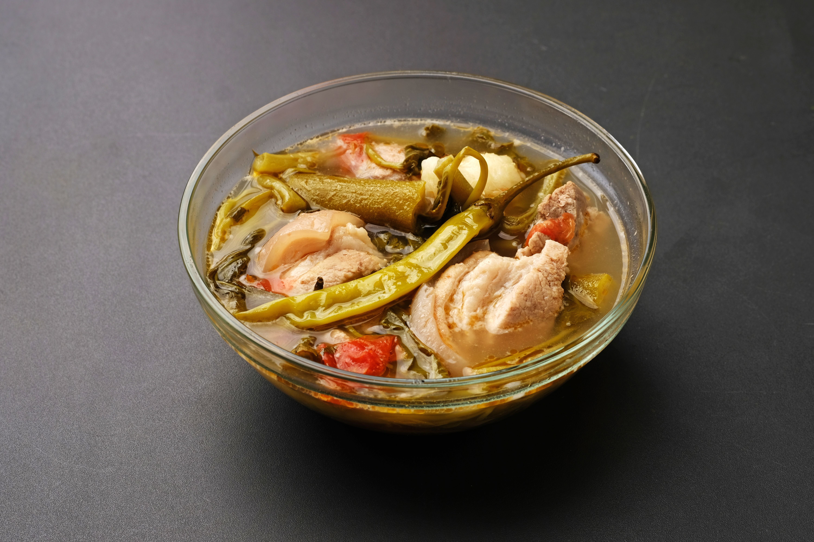

Home
Sinigang Recipe

Description
Sinigang, sometimes anglicized as sour broth, is a Filipino soup or stew characterized by its sour and savory taste.
It is most often associated with tamarind, although it can use other sour fruits and leaves as the souring agent such as unripe mangoes or rice vinegar.
Ingredients
- 1.5 lbs pork belly, cut into bite-sized cubes
- 5 to 6 cups water
- 1 medium red onion, quartered
- 2 medium tomatoes, quartered
- 1 pack (20g) Knorr Sinigang Mix (tamarind flavor)
- 2 tablespoons fish sauce (patis)
- 1 cup string beans (sitaw), cut into 2-inch pieces
- 1 medium eggplant (talong), sliced diagonally
- 4 to 6 pieces okra
- 2 pieces long green chili peppers (siling pangsigang)
- 2 cups water spinach (kangkong), washed and separated
Steps
- Boil the pork: Put the pork belly and water into a large pot and bring to a boil. Remove any foam that floats to the top.
- Add aromatics: Add the quartered onions and tomatoes. Turn the heat down to low, cover the pot, and simmer for about 30 minutes until the pork starts getting tender.
- Season with sour mix: Stir in the fish sauce and the Knorr Sinigang Mix packet until fully dissolved.
- Add firm vegetables: Add the string beans, okra, and eggplant. Cook for 5 minutes until they begin to soften.
- Add greens and chilies: Drop in the long green chili peppers and water spinach (kangkong). Cover the pot, turn off the heat, and let it sit for 3 to 5 minutes to steam the greens.
- Ladle hot into bowls and serve with warm white rice and an extra side of fish sauce for dipping.